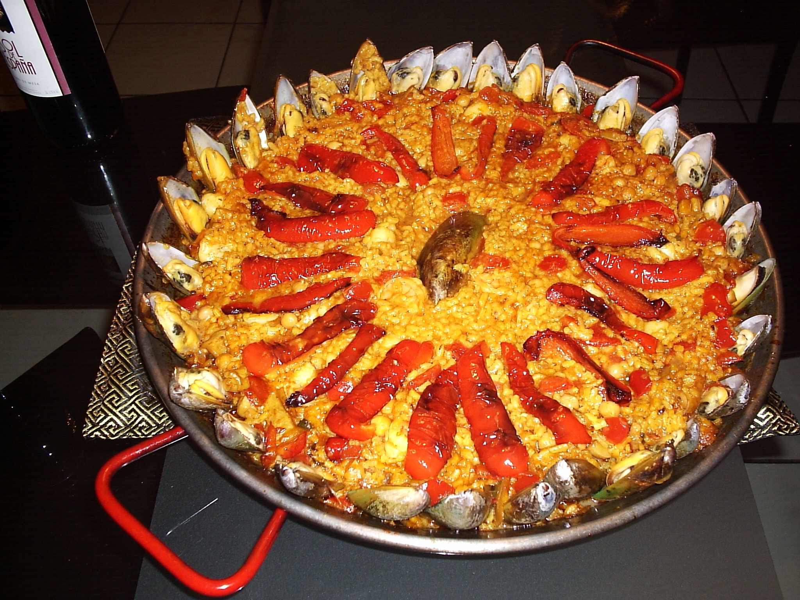
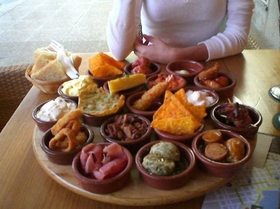
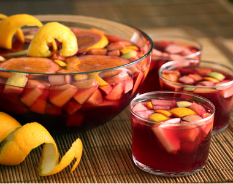
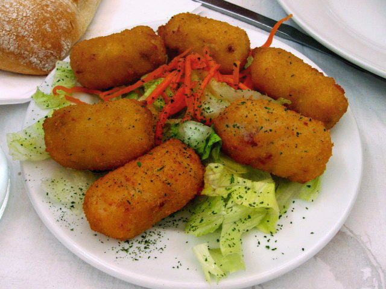

Paella
Paella es un plato a base de arroz que tiene muchas maneras diferentes de preparación. Los dos tipos principales son la paella de mariscos y paella valenciana. La única diferencia es el tipo de carne utilizada. Todos ellos utilizan diversas verduras y especias para ir con los ingredientes básicos y ahí es donde la variedad viene.
Tapas
Las tapas son una variedad de aperitivos que pueden ser frío o caliente. Hay muchos tipos diferentes de tapas y la gente suele pedir un montón de ellos en lugar de una comida real. El propósito de las tapas es animar la conversación, ya que no requieren tanta atención como una comida real. Es normal que la gente camine alrededor, mientras que comer tapas, por lo que es visto como un alimento muy social. En España tapas se consumen en su mayoría después del trabajo, pero antes de la cena, ya que comen la cena alrededor de las 10 de la noche.
Sangria
La sangría es una bebida típica de España. Normalmente consiste en vino, fruta picada, un edulcorante, y una pequeña cantidad de brandy añadido. En lugar de brandy, se pueden añadir otros líquidos como Seltzer, Sprite o 7 Up. Sangría está llena mientras refrigerado por tan solo minutos o hasta un par de días. El uso de la palabra sangría en las etiquetas ahora está restringido según la legislación europea. Sólo sangría hecha en España y Portugal podrán ser vendido bajo ese nombre.
Croquettes
Una croqueta es un pequeño crumbed pan rollo comida frita que contiene, por lo general como ingredientes principales, puré de patatas y algún tipo de carne. Ellos son vistos tanto como un manjar y comida rápida. A menudo se utilizan como un plato de tapas con algún tipo de relleno.
